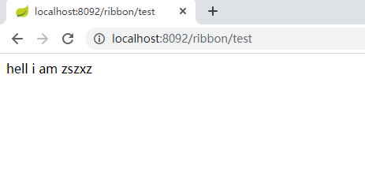

原文连接:https://www.cnblogs.com/zszxz/p/12081935.html
一 前言
经过几篇的cloud系列文章，我想大家都有一个坚实的基础，后续的学习就会轻松很多，如果是刚刚来看的读者需要有eureka基础知识，或者查阅知识追寻者的cloud系列专栏；这篇文章主要讲解如何使用ribbon实现web service客户端调用，ribbon默认算法实现负载均衡等！
二 ribbon简介
ribbon是一个客户端负载均衡器，其能够整合不同的协议工具进行web service API 调用；
主要特色如下：
- 提供可插拔式的负载均衡
- 整合服务发现
- 故障弹性恢复
- cloud支持
- 客户端整合加载负载均衡
核心工程如下：
ribbon-core：整合其他模块实现负载均衡
ribbon-eureka: 基于 eureka client 实现 负载均衡
ribbon-httpclient: 包括JSR-311 实现REST 加载负载均衡
三 eureka-client
在之前的 eureka-client工程中创建controller包，并提供表现层接口，代码如下，然后启动eureka-client实例2个，分别为8090端口，8091端口;
/**
* @Author lsc
* <p> 知识追寻者，ribbon provider the restful api</p>
*/
@RestController
public class RibbonProvidderController {
@GetMapping("zszxz/ribbon")
public String testRibbon(){
return "hell i am zszxz";
}
}四 ribbon-client
4.1 pom.xml
在父工程低下添加新模块 ribbon-client；原来的start-web依赖在父工程中已经引入，故ribbon模块中不会再次引入该依赖；
<dependencies>
<dependency>
<groupId>org.springframework.cloud</groupId>
<artifactId>spring-cloud-starter-netflix-eureka-client</artifactId>
</dependency>
<dependency>
<groupId>org.springframework.cloud</groupId>
<artifactId>spring-cloud-starter-ribbon</artifactId>
</dependency>
</dependencies>4.2 config
使用restTemplate进行客户端调用，故需要进行配置，并且在方法上加 @LoadBalanced 注解表示开启ribbon负载均衡；
/**
* @Author lsc
* <p> ribbon-restTemplate配置 </p>
*/
@Configuration
public class RibbonConfig {
@Bean
@LoadBalanced//表示用于负载均衡
RestTemplate restTemplate(){
return new RestTemplate();
}
}4.3 service
创建service类，并且使用restTemplate进行HTTP API 调用；注意点是这边不使用ip端口，而是直接使用服务的应用名称 eureka-client ;
/**
* @Author lsc
* <p> </p>
*/
@Service
public class RibbonService {
@Autowired
RestTemplate restTemplate;
public String testRibbon(){
return restTemplate.getForObject("http://eureka-client/zszxz/ribbon",String.class);
}
}4.4 controller
创建表现层类, 用于浏览器访问;
/**
* @Author lsc
* <p> </p>
*/
@RestController
public class RibbonController {
@Autowired
RibbonService ribbonService;
@GetMapping("ribbon/test")
public String testRibbon(){
return ribbonService.testRibbon();
}
} 4.5 ribbon启动类
ribbon的启动类也是作为 eureka 的客户端故需要加上@EnableEurekaClient注解；
/**
* @Author lsc
* <p>知识追寻者 ribbon启动类 </p>
*/
@SpringBootApplication
@EnableEurekaClient
public class RibbonApp {
public static void main(String[] args) {
SpringApplication.run(RibbonApp.class,args);
}
}4.6 application.yml
application.yml 配置中使用端口8092，服务注册地址分别是peer1,peer2,peer3；
server:
port: 8092
spring:
application:
name: eureka-ribbon # 应用名称
eureka:
client:
service-url:
# 服务注册地址
defaultZone: http://peer1:10081/eureka/,http://peer2:10082/eureka/,http://peer3:10083/eureka/4.7 启动工程
分别启动 client ,server ; 如下图

4.8 浏览器访问结果
浏览器结果如下，说明我们在 eureka-ribbon 中使用 restTemplate 结合 ribbon 实现了HTTP 方式从 eureka-clinet 模块中调用API；

五 ribbon默认负载均衡
LoadBalancerClient 是 ribbon 的一个核心类，其能够获得 ribbon提供负载均衡的实例信息；在 ribbon-client模块中的controller层添加 方法 ，方法主体是获得实例的端口和主机；以便于于我们分析ribbon负载均衡算法；
@Autowired
LoadBalancerClient loadBalanced;
@GetMapping("ribbon")
public String ribbon(){
ServiceInstance choose = loadBalanced.choose("eureka-client");
String s = "host is :" + choose.getHost() + " port is :" + choose.getPort();
System.out.println(s);
return s;
}重启ribbon-client 工程，使用浏览器访问，控制台输出如下，分别调用了8090,8091两个 eureka-client实例API，说明ribbon默认的负载均衡机制是轮询算法；
host is :peer1 port is :8091
host is :peer1 port is :8090
host is :peer1 port is :8091
host is :peer1 port is :8090
host is :peer1 port is :8091
host is :peer1 port is :8090
host is :peer1 port is :8091
host is :peer1 port is :8090